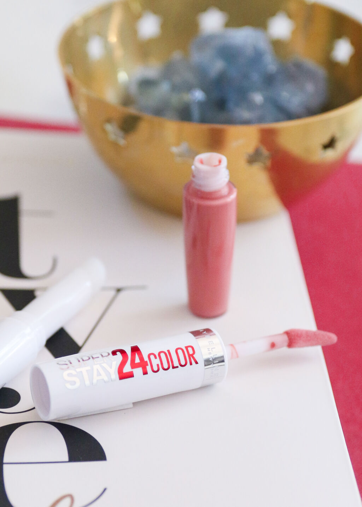
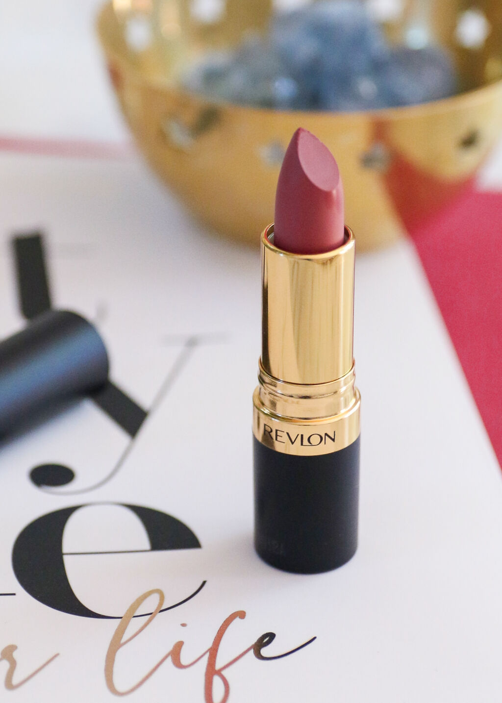

Als eerste hebben we deze lipstick:
Nou de naam zegt het al: ‘Natural’ Flush. Dit moet dus een hele natuurlijke lipkleur zijn. Of in elk geval, zo is hij wel bedoeld. De SuperStay lipstick bestaat uit 2 delen; aan de ene kant een een matte liquid lipstick (stap 1) en aan de andere kant een transparante, verzorgende balsem (stap 2). Je kunt deze producten natuurlijk los van elkaar dragen, maar gecombineerd zorgen ze voor het beste en mooiste resultaat. Wij zelf zijn super tevreden over dit product, het is super mooi en we zouden deze zeker vaker gebruiken!
De kleur is de perfecte MLBB tint voor mij. Nude, maar niet te roze en niet te bruin en met een warme (in elk geval niet te koele) ondertoon. Echt een prachtige, frisse tint. Hij is wel wat opvallender/donkerder dan een gemiddelde MLBB-kleur, maar deze kleur laat mijn gezicht juist spreken, vinden wij! Ook dit product zouden we zeker vaker zelf gebruiken!
Paki.nl@gmail.com
Paki.Be@hotmail.com
Mobiel: 06-17689336
Kantoor: 073-4908424